Optical Devices —— 光電元件
14.0 本章預覽
第十四章不是附錄，也不是應用雜談。它測試的是前面十三章的基礎是否真正內化。能隙（bandgap）、光吸收、非平衡載子、復合機制、pn 接面、異質接面——所有核心概念在此一次會師，轉化為真實世界的光電元件。
光電元件分成兩大類：光→電（太陽能電池、光偵測器）和電→光（LED、雷射二極體）。前者依賴光子被吸收後產生電子-電洞對（electron-hole pair, EHP），再由內建電場將其分離、收集；後者則依賴載子復合時將能量以光子形式釋放。兩者的物理基礎完全相同——只是時間箭頭相反。
本章的核心物理問題只有一個：半導體如何與光交互作用？答案取決於兩個關鍵參數——吸收係數 $\alpha$（決定光能穿透多深）和能隙 $E_g$（決定什麼波長的光可以被吸收或發射）。直接能隙材料（GaAs、InP、GaN）在光電應用中遠優於間接能隙材料（Si、Ge），因為其光學躍遷不需要聲子輔助，機率高出 4–6 個數量級。
如果前面只有背二極體公式而不懂直接能隙、吸收係數與載子壽命的物理意義，這一章就只會剩下元件名字。反過來，如果能清楚說出「為什麼 Si 在電子學稱霸，但在光電元件中卻必須讓位給 GaAs」，才算真正掌握了半導體物理的核心。
關鍵概念
- 光吸收：$h\nu\ge E_g$；$\alpha$ 決定穿透深度。
- 光生載子：吸收產生 EHP，需電場分離才成電流。
- 太陽能電池：$I=I_L-I_S(e^{eV/kT}-1)$，效率受 $FF$ 與 $E_g$ 限制。
- 光偵測器：PIN/APD 在速度與靈敏度間取捨。
- 電致發光：直接能隙材料輻射復合支撐 LED 與雷射。
🧭 本章推理地圖
- 已知條件光子能量、材料能隙與吸收/輻射選擇律（§14.1、§14.4）
- 中間機制光生載子產生、分離或輻射復合決定光↔電轉換（§14.2–§14.3、§14.5）
- 元件性能量子效率、響應速度與發射波長（§14.5–§14.6）
- 工程用途設計太陽能、通訊偵測與固態照明/雷射光源（工程決策）
14.1 光吸收與電子-電洞對產生
吸收條件：$h\nu\ge E_g$，截止波長 $\lambda_c=1.24/E_g$ μm；Beer-Lambert $I=I_0 e^{-\alpha x}$。
直接能隙 $\alpha$ 在 $E_g$ 處急升；間接能隙需聲子，同能量下 $\alpha$ 可低 2–4 個數量級。
產生率 $G_L=\alpha\Phi_0 e^{-\alpha x}$；光電流還須乘上收集機率，非僅吸收。
表面復合、缺陷與擴散長度決定光生載子能否在復合前被收集。
吸收、產生、收集三步分開思考，是讀光電元件的基本方法。
📐 例題 — GaAs 截止波長
$E_g=1.42$ eV → $\lambda_c=1.24/1.42\approx0.87$ μm（近紅外）。
14.1.1 光子吸收係數
光電元件的第一個問題不是「導線怎麼接」，而是光子能量能不能跨過能隙。這決定了材料對特定波長的光是透明還是不透明——而這正是所有光電元件的物理起點。從太陽能電池的效率極限到 LED 的發光顏色，全部由吸收過程決定。
光在半導體中的行為可以用一個簡單的物理圖像理解：光子攜帶能量 $E = h\nu = hc/\lambda$。當它進入半導體時，可能發生三種結果：(1) 若 $h\nu < E_g$，光子能量不足以激發價帶電子跨過能隙 → 半導體對該波長透明；(2) 若 $h\nu \ge E_g$，光子可以將價帶電子激發到導帶 → 產生一個電子-電洞對（EHP）；(3) 光子也可能與晶格振動（聲子）或雜質能階交互作用，但這些過程對光電元件的貢獻通常較小。
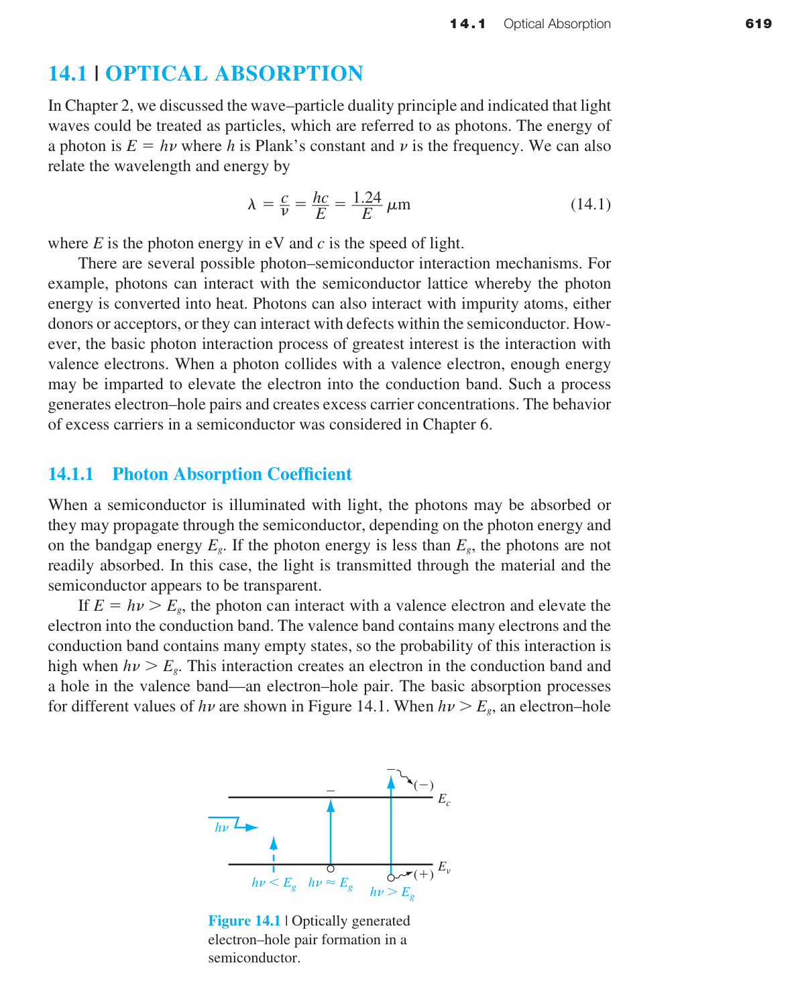
這個簡單公式是光電元件設計的第一工具。例如：Si 的 $E_g=1.12$ eV → 截止波長 $\lambda_c=1.24/1.12\approx1.11\;\mu\text{m}$（紅外區）。GaAs 的 $E_g=1.42$ eV → $\lambda_c\approx0.87\;\mu\text{m}$。GaP 的 $E_g=2.26$ eV → $\lambda_c\approx0.55\;\mu\text{m}$（可見光綠區）。這解釋了為什麼 GaP LED 能發出可見光而 GaAs LED 只能發紅外光。
14.1.2 吸收係數 $\alpha$ 的物理推導
光子進入半導體後，其強度隨深度呈指數衰減。這個衰減率由吸收係數 $\alpha$（單位：cm⁻¹）描述。考慮一束光子強度 $I_\nu(x)$（單位：W/cm² 或光子數/cm²-s）入射在 $x$ 處，經過一層厚度 $dx$ 後，強度變為 $I_\nu(x+dx)$：
這是一階線性微分方程：
給定邊界條件 $I_\nu(0)=I_{\nu 0}$（入射表面的光子強度），解為：
這就是Beer-Lambert 吸收定律在半導體中的表達式。$\alpha$ 越大，光衰減越快。舉例來說：
- Si 對 $\lambda=1.0\;\mu\text{m}$（$h\nu\approx1.24$ eV，略大於 $E_g$）：$\alpha\approx10^2$ cm⁻¹ → 90% 的光在 $d=\ln(10)/10^2=0.023$ cm = 230 μm 內被吸收。
- Si 對 $\lambda=0.5\;\mu\text{m}$（$h\nu=2.48$ eV，遠大於 $E_g$）：$\alpha\approx10^4$ cm⁻¹ → 90% 的吸收深度僅 2.3 μm。
- GaAs 對 $\lambda=0.75\;\mu\text{m}$：$\alpha\approx0.9\times10^4$ cm⁻¹ → 吸收極快。
14.1.3 直接能隙 vs. 間接能隙的吸收差異
這是本章最關鍵的材料物理概念。在直接能隙半導體（GaAs、InP、GaN）中，導帶底和價帶頂位於 $k$ 空間的同一點（$\Gamma$ 點）。電子從價帶躍遷到導帶只需要吸收一個光子——動量守恆自動滿足。吸收係數在 $h\nu=E_g$ 處急劇上升，典型值 $\alpha\propto\sqrt{h\nu-E_g}$。
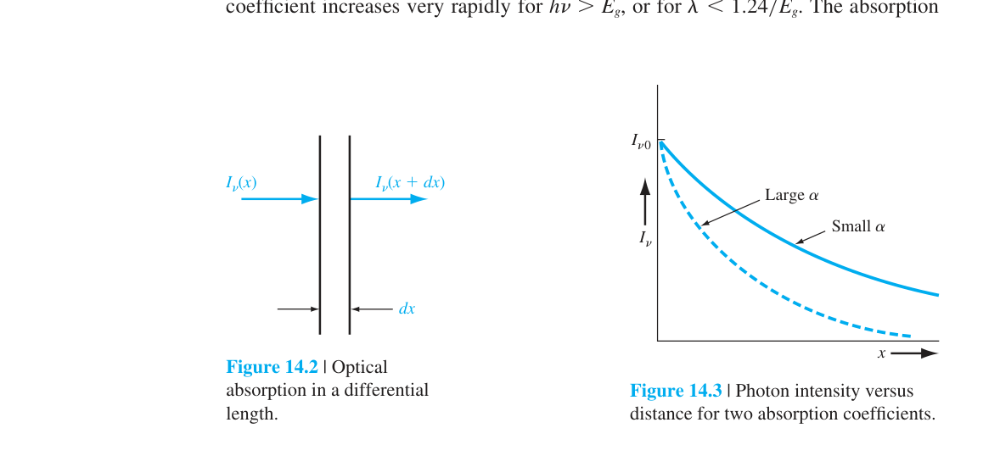
在間接能隙半導體（Si、Ge、GaP）中，導帶底和價帶頂位於 $k$ 空間的不同點。電子躍遷需要同時滿足能量守恆和動量守恆 → 必須有聲子參與以提供動量差 $\Delta k$。這是一個三粒子過程（光子+電子+聲子），機率遠低於雙粒子過程。因此間接能隙材料的 $\alpha$ 在 $h\nu=E_g$ 附近的上升較緩慢，且在略高於 $E_g$ 的值處比直接能隙材料低 2–4 個數量級。
例題：用吸收深度判斷主動區厚度
若吸收係數很大，光強在靠近表面的短距離內快速衰減，元件設計就要把空乏區或高收集效率區放在吸收發生的位置。反過來，吸收係數小的長波長光需要更厚的吸收層，否則會穿透而沒有產生足夠載子。
14.1.2 電子–電洞對產生率
光子在材料中被吸收後產生電子-電洞對。產生率 $g$（單位：#/cm³-s）與吸收的能量密度成正比：
其中 $I_\nu(x)/h\nu$ 是光子通量（#/cm²-s），乘以 $\alpha$（每單位距離被吸收的光子比例）得到單位體積的產生率。若考慮表面反射率 $R$（Si 裸晶約 35%），實際進入材料的光子通量為 $(1-R)$ 倍：
這裡 $\Phi_0$ 是入射光子通量。若假設每個被吸收的光子產生一個 EHP（量子效率=1），則 $G_L(x)$ 就是 EHP 的產生率。
數值範例：GaAs 在 $\lambda=0.75\;\mu\text{m}$（$h\nu=1.65$ eV），光子強度 $I_\nu=0.05$ W/cm²（約為陽光的典型值），$\alpha\approx0.9\times10^4$ cm⁻¹：
若少數載子壽命 $\tau=10^{-7}$ s，則穩態過量載子濃度 $\delta n = g\tau = 1.70\times10^{14}$ cm⁻³。這顯示光產生可以在半導體中建立非常可觀的過量載子濃度——這正是太陽能電池和光偵測器運作的基礎。
例題：由光子通量估算生成率
已知入射光子通量與吸收係數時，可先寫出深度相依的光通量，再對位置微分得到局部電子–電洞對產生率。最後把生成率在有效收集區積分，才得到可貢獻光電流的載子數。
14.2 太陽能電池
例題：由光子通量估算生成率
已知入射光子通量與吸收係數時，可先寫出深度相依的光通量，再對位置微分得到局部電子–電洞對產生率。最後把生成率在有效收集區積分，才得到可貢獻光電流的載子數。
Shockley-Queisser 極限約 28%（單接面 Si）；多接面與聚光可突破單接面極限。
光照 I–V 為 $I=I_L-I_S[e^{eV/kT}-1]$：光生電流與暗二極體電流疊加。
短路電流 $I_{sc}\approx I_L$ 主要由吸收與收集決定；開路電壓 $V_{oc}\approx(kT/e)\ln(I_L/I_S)$ 受復合控制。
填充因子 FF 反映串聯/並聯電阻與二極體品質；轉換效率 $\eta=FF\cdot I_{sc}V_{oc}/P_{in}$。
異質接面窗口層可減少表面復合並改善藍光響應。
14.2.1 pn 接面太陽能電池
太陽能電池（solar cell）的核心運作原理可以濃縮為三個步驟：(1) 吸光產生 EHP（14.1 節）；(2) 內建電場分離載子（第七章的空乏區電場）；(3) 載子被收集到兩端形成外部電流（類似逆偏光二極體）。這三步驟沒有一個是新的物理——全部建立在前面章節的基礎上。
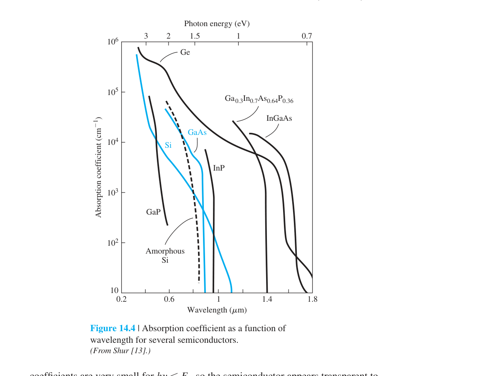
一個 pn 接面太陽能電池不需要外加偏壓。光照射在接面上，在空乏區和兩側中性區產生 EHP。空乏區中的 EHP 立即被內建電場分離——電子掃向 n 側，電洞掃向 p 側——形成光電流 $I_L$，方向為逆偏方向。這個光電流流經外部負載時產生電壓降，該電壓順向偏壓了 pn 接面，產生順向二極體電流 $I_F$ 來對抗光電流。淨電流為兩者之差：
這裡 $I_S$ 是二極體的反向飽和電流（第八章的 Shockley 理想二極體方程），$I_L$ 是光電流。注意這個公式就是把第八章的理想二極體方程中的電流方向反轉，再加上光電流項——這是疊加原理的直接運用。
14.2.2 短路電流與開路電壓
兩種極限情況定義了太陽能電池的關鍵參數：
短路電流 $I_{sc}$：負載電阻 $R=0$，$V=0$。此時 $I=I_{sc}=I_L$。光電流全部流出外部電路，沒有順向二極體電流的抵消。
開路電壓 $V_{oc}$：$R\to\infty$，$I=0$。此時光電流完全被順向二極體電流平衡。令 $I=0$：
$V_{oc}$ 的物理限制：(1) $V_{oc}$ 永遠小於內建電位 $V_{bi}$——否則空乏區電場將被完全抵消，典型比值 $V_{oc}/V_{bi}\approx0.6$–$0.8$。(2) $V_{oc}\propto\ln(I_L)\propto\ln(\text{光強度})$——光強度增加 10 倍，$V_{oc}$ 僅增加 $V_t\ln10\approx60$ mV。這就是為什麼聚光技術主要增加 $I_{sc}$ 而非 $V_{oc}$。
例題：從 I–V 曲線讀出輸出功率
先找出光照下 I–V 曲線中電壓與電流乘積最大的點，再與短路電流、開路電壓比較，即可得到填充因子。這個流程能把材料吸收、接面收集與串聯電阻的影響放在同一張圖上檢查。
14.2.2 轉換效率與聚光
太陽能電池不是操作在 $I_{sc}$ 或 $V_{oc}$ 點，而是在 $I$-$V$ 曲線上某個能輸出最大功率的點 $(I_m, V_m)$。
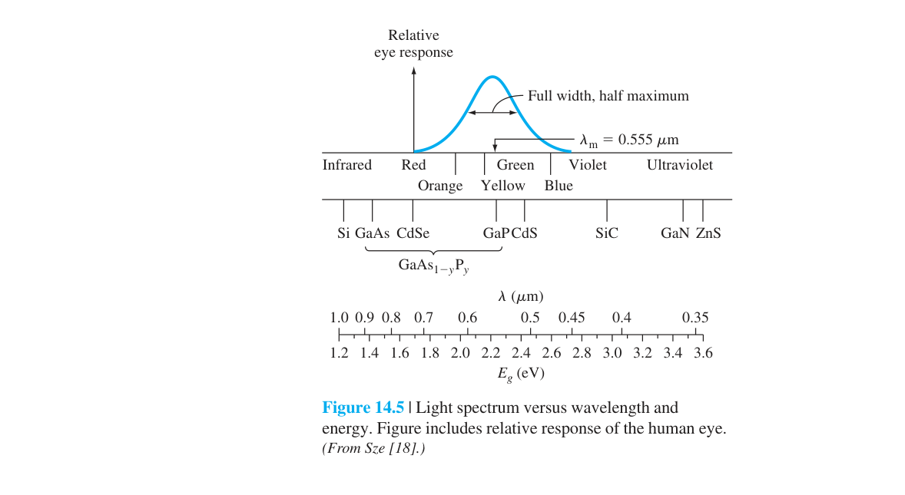
輸出功率 $P=I\cdot V$：
最大值條件 $dP/dV=0$ 給出：
$V_m$ 需用數值方法求解。求出 $(I_m, V_m)$ 後：
典型 FF 在 0.7–0.8 之間。理想 Si 單接面太陽能電池的效率極限約 28%（Shockley-Queisser 極限），實際商業模組約 15%–22%。效率損失來自：(1) $h\nu<E_g$ 的光子完全不被吸收；(2) $h\nu>E_g$ 的光子，超出 $E_g$ 的能量以熱的形式耗散（熱化損失）；(3) 復合損失；(4) 串聯電阻和表面反射。
例題：由最大功率點求效率
若已知最大功率點的電壓與電流，先求輸出功率，再除以入射光功率。若題目同時給短路電流與開路電壓，則可用填充因子檢查答案是否合理。
14.2.3 非均勻吸收效應
上述分析假設 EHP 在整個元件中均勻產生。實際上 $\alpha$ 是波長的強函數：短波長（高能量）光子在表面附近就被吸收殆盡，長波長光子則穿透較深。考慮表面反射 $R(\lambda)$ 後，各深度的產生率為：
短波長（$\alpha$ 大）→ EHP 集中在表面附近 → 表面復合損失嚴重（若表面復合速度 $s$ 高）。長波長（$\alpha$ 小）→ EHP 遠離接面 → 擴散到空乏區前可能已經復合。這就是為什麼實際太陽能電池需要精心設計接面深度和表面鈍化——在吸收和收集之間取得最佳平衡。
非均勻吸收的核心是「生成位置」與「收集位置」不一定重合，尤其短波長光常集中在表面附近產生。
若表面復合速度很大，靠近表面產生的少數載子會先被復合吃掉，短路電流因此下降。
因此太陽能電池不能只追求吸收係數大，還要讓擴散長度、空乏區位置與表面鈍化互相配合。
例題：判斷表面復合造成的光譜損失
若短波長響應特別差，而長波長響應仍正常，常見原因是靠近表面的生成載子被復合。改善方向包括表面鈍化、窗口層設計與把接面位置調到更有利的深度。
14.2.4 異質接面太陽能電池
同質接面（homojunction）太陽能電池使用單一材料（如 Si），所有波長的光都在同一材料中被吸收。異質接面（heterojunction）使用兩種不同能隙的材料：寬能隙材料（如 AlGaAs、a-Si:H）作為「光學窗口」，窄能隙材料作為主要吸收層。這是建立在第九章和第十二章異質接面理論上的直接應用。
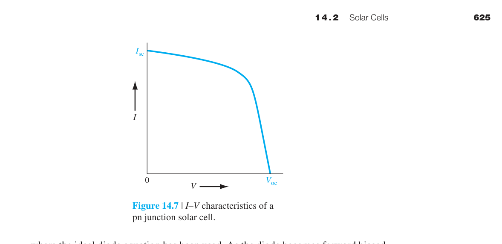
工作原理：$h\nu < E_{g,\text{wide}}$ 的光子穿過寬能隙窗口層，在窄能隙吸收層中產生 EHP；$h\nu > E_{g,\text{wide}}$ 的光子在窗口層被吸收，產生的載子若在擴散長度內可被收集。寬能隙窗口同時減少了表面復合（因為窗口層-吸收層界面可以設計為高品質異質界面），並降低了串聯電阻。
典型結構：AlGaAs/GaAs 異質接面太陽能電池。Al$_x$Ga$_{1-x}$As 的能隙隨 $x$ 可調（$E_g=1.424+1.247x$ eV，$0\le x\le0.45$ 為直接能隙），作為 GaAs 吸收層上的窗口。這種結構可將效率提升至 25% 以上，廣泛用於太空太陽能電池。
異質接面利用不同能隙材料組合，讓入射光先通過較寬能隙的窗口層，再在較適合吸收的主動層產生載子。
窗口層的任務是降低表面吸收與表面復合，同時保留良好的電性接觸與載子選擇性。
例題：判斷窗口層的功能
若窗口層能隙較大且厚度適當，短波長光不會在高復合表面大量損失，更多光子能到達主動層。若窗口層太厚或導電性差，又會造成吸收損失或串聯電阻增加。
14.2.5 非晶矽太陽能電池
非晶矽（a-Si:H，氫化非晶矽）提供了低成本、大面積太陽能電池的可能性。與單晶 Si 不同，a-Si 沒有長程有序的晶體結構，其能帶中存在大量的遷移率邊緣（mobility edge）和隙態（band-gap states）。遷移率間隙（mobility gap）約 1.7 eV，大於單晶 Si 的 1.12 eV。
關鍵特性：(1) a-Si 的吸收係數極高——在 $h\nu>1.7$ eV 時 $\alpha$ 可達 $10^4$–$10^5$ cm⁻¹，比單晶 Si 高一個數量級 → 只需 ∼1 μm 厚度即可吸收大部分陽光。(2) 載子遷移率很低（$10^{-3}$–$10$ cm²/V-s），擴散長度短 → 使用 PIN 結構而非 pn 結構，讓內建電場延伸整個 i 層以確保載子收集。(3) 效率較低（∼10%），但成本優勢顯著。
非晶矽因為缺乏長程晶格週期，能帶邊附近會出現尾態與缺陷態，影響復合與載子傳輸。
氫化可鈍化部分懸鍵缺陷，因此 a-Si:H 能以薄膜形式用於大面積低成本太陽能電池。
它的吸收層可以做得很薄，但缺陷與光致衰退會限制長期效率與穩定度。
例題：比較晶矽與非晶矽太陽能電池
晶矽重視少數載子擴散長度與高品質接面；非晶矽則常用薄膜吸收與內建電場收集載子。若題目提到光致衰退或缺陷鈍化，通常指向非晶矽的限制。
14.3 光偵測器
非晶矽因為缺乏長程晶格週期，能帶邊附近會出現尾態與缺陷態，影響復合與載子傳輸。
氫化可鈍化部分懸鍵缺陷，因此 a-Si:H 能以薄膜形式用於大面積低成本太陽能電池。
它的吸收層可以做得很薄，但缺陷與光致衰退會限制長期效率與穩定度。
例題：比較晶矽與非晶矽太陽能電池
晶矽重視少數載子擴散長度與高品質接面；非晶矽則常用薄膜吸收與內建電場收集載子。若題目提到光致衰退或缺陷鈍化，通常指向非晶矽的限制。
光偵測器關鍵指標：響應度、量子效率、暗電流、雜訊、頻寬與線性度。
14.3.1 光導體
光偵測器（photodetector）的任務是把光信號轉換為電信號。與太陽能電池不同，光偵測器通常操作在反向偏壓下，目的不是輸出功率，而是追求線性度、速度和靈敏度。根據運作機制，可分為光導體（photoconductor）、光二極體（photodiode）、PIN 光二極體、雪崩光二極體（APD）和光電晶體（phototransistor）五大類。
14.3.2 光導體 —— 最簡單的光偵測器
光導體本質上就是一塊兩端有歐姆接觸的半導體材料。光照產生 EHP → 材料導電率增加 → 在固定偏壓下電流增加。
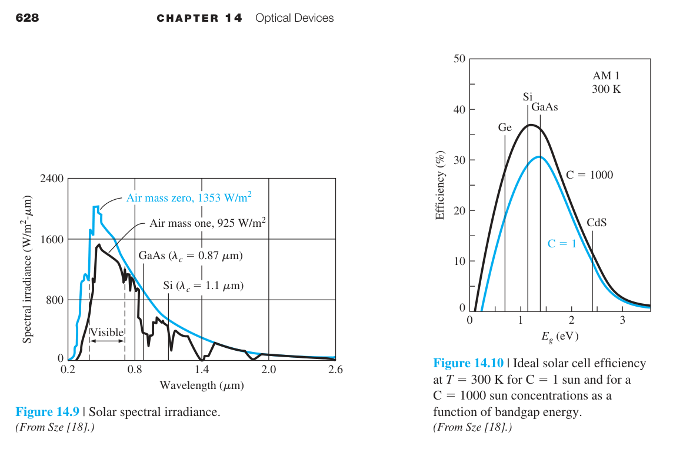
初始（暗）導電率：$\sigma_0 = e(\mu_n n_0 + \mu_p p_0)$。光照後的導電率：$\sigma = e[\mu_n(n_0+\delta n) + \mu_p(p_0+\delta p)]$。光導電率（photoconductivity）：
光電流密度：$J_L = \Delta\sigma\cdot E = e(\delta p)(\mu_n + \mu_p)E$。其中 $\delta p = G_L\tau_p$（穩態）。
光導體增益是光導體最獨特的概念——定義為收集到的載子數與光產生載子數的比值：
其中 $t_n = L/(\mu_n E)$ 是電子渡越時間。物理圖像：一個光子產生一個電子-電洞對。電子快速漂移到陽極（渡越時間 $t_n$），但為了維持電中性，陰極必須注入另一個電子來替代。這個「替代-漂移」循環在載子壽命 $\tau_p$ 期間重複 → 一個光生電子可以導致多個電子流經外部電路。增益可以遠大於 1——數值範例：Si 光導體，$L=100$ μm，$\mu_n=1350$ cm²/V-s，$V=10$ V → $t_n=7.4\times10^{-9}$ s。若 $\tau_p=10^{-6}$ s：$\Gamma_{\text{ph}}\approx(10^{-6}/7.4\times10^{-9})(1+480/1350)\approx183$。
例題：判斷光導增益是否大於一
若光生載子在復合前能多次穿越元件，外部電路可量到大於一次光生事件的電荷流動，光導增益就可能大於一。若壽命很短或電極距離很長，增益會降低。
14.3.2 光二極體
光二極體是操作在反向偏壓下的 pn 接面。與光導體不同，光二極體的電流機制是載子的漂移（在空乏區內）和擴散（在中性區內），而非簡單的導電率變化。
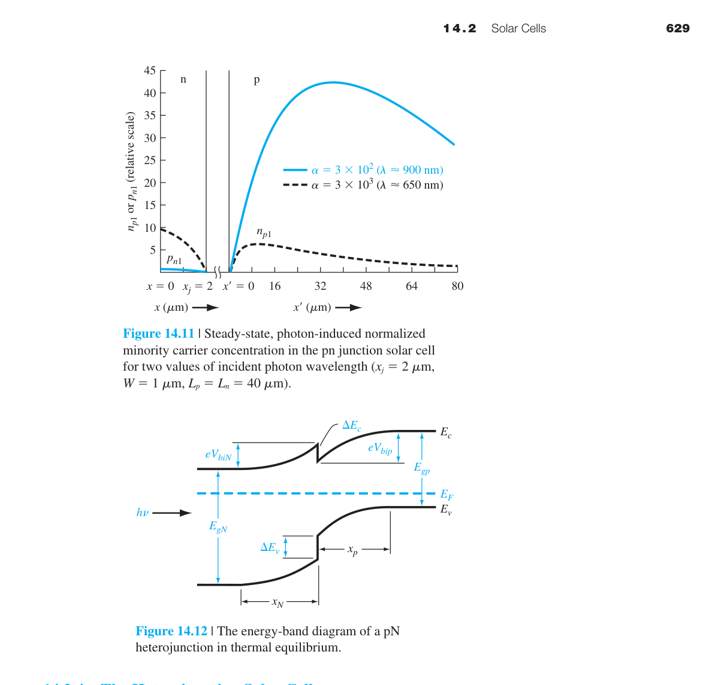
瞬發光電流（prompt photocurrent）：在空乏區內產生的 EHP 立即被電場分離並掃出 → 響應極快（∼ps 級），增益=1。空乏區光電流密度：
延遲光電流（delayed photocurrent）：在中性 p 區和 n 區產生的少數載子需先擴散到空乏區邊緣才會被收集。由穩態擴散方程：
解（長二極體）：$\delta n_p(x) = G_L\tau_{n0} - (G_L\tau_{n0} + n_{p0})e^{x/L_n}$（$x\le0$）。擴散電流密度在 $x=0$ 處：
第一項是光電流，第二項是理想反向飽和電流。同理可得電洞側光電流 $J_{p1}=eG_L L_p$。總穩態光電流密度：
數值範例：Si pn 光二極體，$N_a=N_d=10^{16}$ cm⁻³，$D_n=25$ cm²/s，$D_p=10$ cm²/s，$\tau_{n0}=5\times10^{-7}$ s，$\tau_{p0}=10^{-7}$ s，$V_R=5$ V，$G_L=10^{21}$ cm⁻³-s⁻¹。$L_n=35.4$ μm，$L_p=10.0$ μm，$W=1.21$ μm。$J_L=1.6\times10^{-19}\times(1.21+35.4+10.0)\times10^{-4}\times10^{21}=0.75$ A/cm²——遠大於反向飽和電流。
例題：由響應度估算光電流
若已知入射光功率與響應度，光電流可用兩者相乘估算。接著要檢查暗電流是否可忽略，因為弱光量測時雜訊常由暗電流與放大器限制。
14.3.3 PIN 光二極體
在許多高速應用中，擴散電流（延遲光電流）因為響應慢而不可接受。解決方案是將空乏區做得盡可能寬，使大部分光子在空乏區內被吸收 → 光電流以瞬發分量為主。這就是 PIN 光二極體的設計動機。
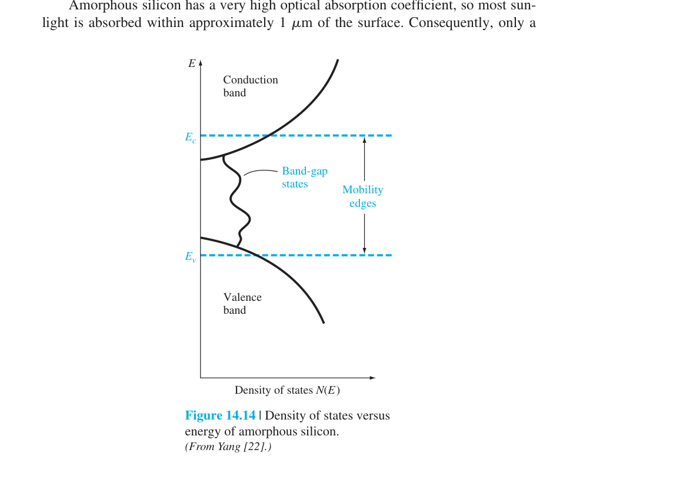
PIN 結構：在 p⁺ 和 n⁺ 層之間夾一層本質（intrinsic, i）層。反向偏壓下，i 層完全空乏化。考慮非均勻吸收：光子通量 $\Phi(x)=\Phi_0 e^{-\alpha x}$。在 i 層內產生的光電流：
當 $W\gg1/\alpha$（i 層遠大於吸收深度），$J_L\to e\Phi_0$——所有光子都被吸收並轉化為電流。數值範例：Si PIN，$W=20$ μm，$\Phi_0=10^{17}$ cm⁻²-s⁻¹，$\alpha=10^3$ cm⁻¹ → $J_L=1.6\times10^{-19}\times10^{17}(1-e^{-10^3\times20\times10^{-4}})=13.8$ mA/cm²。
PIN 光二極體用寬本質層增加吸收與空乏區寬度，使多數光生載子能在電場中漂移收集。
較寬的空乏區可降低接面電容，改善 RC 響應，但也會增加載子飛渡時間。
例題：選擇 PIN 厚度
若應用偏向長波長吸收，可增加 i 層厚度提高量子效率；若應用偏向高速通訊，則要在吸收效率、電容與飛渡時間之間折衷。
14.3.4 雪崩光二極體
APD 在 PIN 結構的基礎上將反向偏壓提高到接近崩潰電壓（參考第八章的崩潰物理），使光生載子在空乏區內通過撞擊游離（impact ionization）產生額外的 EHP——實現內部電流增益。
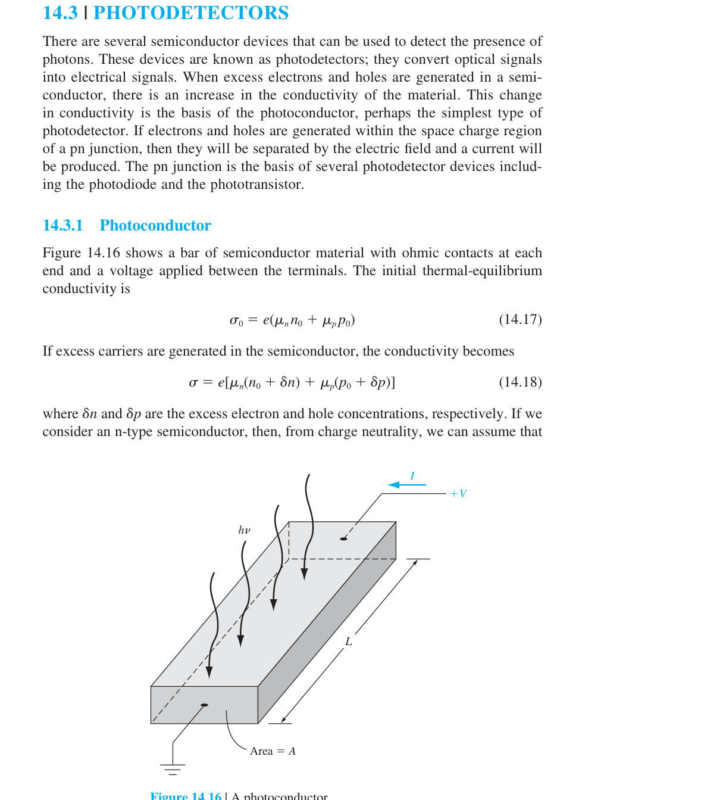
增益倍數 $M$（avalanche multiplication factor）可達 10–100。APD 的增益-頻寬乘積典型值 ∼100 GHz。例如：空乏區寬度 10 μm，飽和漂移速度 $10^7$ cm/s → 渡越時間 $t=100$ ps → 基本頻率 $f=1/(2t)=5$ GHz。若 $M=20$，增益-頻寬乘積=100 GHz。
雪崩光二極體在高反向偏壓下操作，讓光生載子引發撞擊游離，產生內部電流倍增。
內部倍增可以提升弱光靈敏度，但同時會帶來倍增雜訊與偏壓穩定度問題。
因此 APD 的重點不是只追求高增益，而是控制增益、雜訊、崩潰電壓與溫度漂移。
例題：比較 PIN 與 APD
若系統光功率很低且可提供穩定高壓偏壓，APD 的內部倍增有利；若重視低雜訊、低偏壓與線性簡潔，PIN 光二極體通常較合適。
14.3.5 光電晶體
光電晶體將光二極體和 BJT 的增益機制結合。典型結構為 npn BJT，基極-集極接面作為光吸收區（大面積、反向偏壓）。光生電洞累積在基極，使基極-射極接面順向偏壓 → 射極注入電子 → 正常的 BJT 放大作用。
集極電流：
其中 $I_L$ 是基極-集極光電流，$\beta$ 是共射極電流增益。增益可達數百。但頻率響應受限於：(1) 大面積基極-集極電容；(2) Miller 效應放大輸入電容。因此光電晶體適合低頻、高增益應用。
| 元件類型 | 增益 | 速度 | 優點 | 缺點 |
|---|---|---|---|---|
| 光導體 | 10–10³ | 慢 (μs–ms) | 結構最簡單 | 速度與增益互斥 |
| pn 光二極體 | 1 | 中–快 | 模型直觀、低雜訊 | 無內部增益 |
| PIN 光二極體 | 1 | 快 (GHz) | 高速主力 | 靈敏度有限 |
| APD | 10–100 | 快 (GHz) | 高靈敏度 | 高偏壓、過量雜訊 |
| 光電晶體 | 100–1000 | 慢 (MHz) | 最高增益 | Miller 效應限速 |
光電晶體把光生電流當作等效基極驅動，再透過電晶體作用放大輸出電流。
因此它的靈敏度通常高於一般光二極體，但速度會受到基區儲存電荷與電晶體頻寬限制。
例題：選擇光偵測器
遙控接收、光遮斷感測等低速應用可用光電晶體取得較大訊號；高速光纖接收器則常選 PIN 或 APD，以避免電晶體儲存效應限制頻寬。
14.4 光致發光與電致發光
光電晶體把光生電流當作等效基極驅動，再透過電晶體作用放大輸出電流。
因此它的靈敏度通常高於一般光二極體，但速度會受到基區儲存電荷與電晶體頻寬限制。
例題：選擇光偵測器
遙控接收、光遮斷感測等低速應用可用光電晶體取得較大訊號；高速光纖接收器則常選 PIN 或 APD，以避免電晶體儲存效應限制頻寬。
PL 用光激發表徵材料；EL 用電注入，是 LED/雷射的基礎——兩者為時間反演對稱過程。
輻射復合含帶間直接躍遷與雜質躍遷；非輻射含 SRH 與 Auger，降低量子效率。
14.4.1 基本躍遷
前面討論的都是「光 → 電」（光子被吸收，產生載子）。現在轉向「電 → 光」：注入的載子復合時釋放光子。這兩種過程在量子力學層面是時間反演對稱的——吸收和輻射躍遷的矩陣元素相同（Fermi's Golden Rule），區別僅在於初態和終態的載子佔據情況。
光致發光（Photoluminescence, PL）：用光激發產生過量載子 → 載子復合發光。PL 是材料表徵的標準工具——PL 光譜的峰值位置給出 $E_g$，譜寬反映材料品質。
電致發光（Electroluminescence, EL）：用電流注入產生過量載子 → 載子復合發光。這是 LED 和雷射二極體的物理基礎。本章主要關注注入式電致發光——通過 pn 接面注入少數載子。
14.4.2 基本躍遷過程：哪些復合會發光？
載子復合可以經由多種途徑，並非所有途徑都發光：
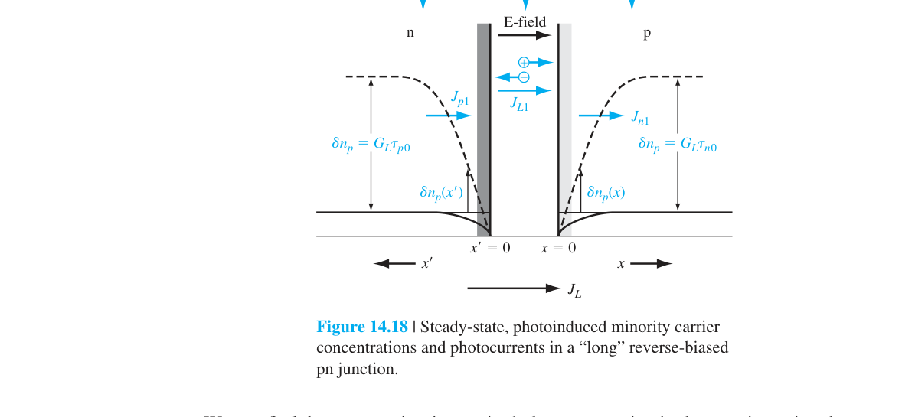
帶間直接躍遷：導帶電子直接落入價帶電洞，釋放能量 $\approx E_g$ 的光子。這只在直接能隙材料中有效率。發射光譜 $I(\nu)\propto\nu^2(h\nu-E_g)^{1/2}\exp[-(h\nu-E_g)/kT]$——譜寬由熱能 $kT$ 決定（室溫 ∼0.026 eV → ∼30 nm）。
雜質相關躍遷：導帶→受體、施體→價帶、施體→受體對（DAP）。光子能量 $=E_g-(E_A+E_D)+e^2/(\epsilon r)$（庫倫項）。GaP 中的 Zn-O 對發光就是 DAP 躍遷的經典例子。
非輻射復合：SRH 復合（通過深層陷阱，能量轉給聲子）和 Auger 復合（能量轉給第三個載子，在重摻雜材料中重要）。這些過程與光發射競爭 → 降低發光效率。
例題：判斷材料是否適合 LED
若材料為直接能隙且能隙對應所需光子能量，通常是較好的發光材料候選。若材料為間接能隙，即使能隙大小合適，也可能因輻射效率低而不適合。
14.4.2 發光效率
量子效率（quantum efficiency）定義為輻射復合速率與總復合速率的比值：
其中 $R_r = Bnp$（$B$ 為輻射復合係數），$R_{nr}$ 為非輻射復合速率。直接能隙材料的 $B$ 值比間接能隙材料大約 $10^6$ 倍——這就是為什麼 GaAs（直接）可以做高效率 LED 而 Si（間接）不行。
發光效率取決於注入載子有多少比例以輻射復合結束，而不是被缺陷、表面或 Auger 機制非輻射消耗。
內部量子效率可視為輻射復合率相對於總復合率的比例，因此材料品質與缺陷密度非常關鍵。
溫度上升常使非輻射通道變強，造成發光強度下降。
例題：用壽命判斷效率
若輻射壽命短且非輻射壽命長，輻射復合佔比高，內部效率較佳。若缺陷使非輻射壽命變短，注入電流會更多轉成熱而不是光。
14.4.3 材料
三個最重要的直接能隙材料系統：
GaAs（砷化鎵）：$E_g=1.42$ eV → $\lambda=0.873$ μm（紅外區）。是紅外 LED 和雷射的基礎材料。與 AlGaAs 形成晶格匹配的異質結構是半導體雷射的核心技術。
Al$_x$Ga$_{1-x}$As：能隙可調 $E_g=1.424+1.247x$（$0\le x\le0.45$，直接能隙）。$x>0.45$ 變為間接能隙。折射率隨 $x$ 增大而減小（GaAs 最高 ∼3.6，AlAs ∼3.0）→ 可製作光波導。
GaAs$_{1-x}$P$_x$：能隙可調，$0\le x\le0.45$ 為直接能隙。$x=0.4$ → $E_g\approx1.9$ eV → $\lambda\approx0.65$ μm（紅光）→ 早期的可見光 LED。$x>0.45$ 變為間接能隙，效率急劇下降。
LED 材料常使用 III–V 族化合物與合金，透過組成調整能隙，進而控制發光波長。
例題：用能隙估算發光顏色
可用光子能量約等於能隙的想法估算波長。能隙越大，發光波長越短；但實際元件還會受到合金組成、量子井與溫度影響。
14.5 發光二極體 (LED)
LED 材料常使用 III–V 族化合物與合金，透過組成調整能隙，進而控制發光波長。
例題：用能隙估算發光顏色
可用光子能量約等於能隙的想法估算波長。能隙越大，發光波長越短；但實際元件還會受到合金組成、量子井與溫度影響。
內部量子效率由輻射復合占比決定；封裝、粗化表面與螢光粉轉換提升取光。
高電流下自熱、載子溢出與效率 droop 是 LED 工程常見限制。
異質接面與量子井把載子限制在主動區，提高復合機率並控制波長。
14.5.1 光的產生
LED 是注入式電致發光的最直接實現：順向偏壓的 pn 接面將少數載子注入中性區 → 這些少數載子與多數載子復合 → 若復合是輻射性的 → 發光。發光波長由能隙決定：
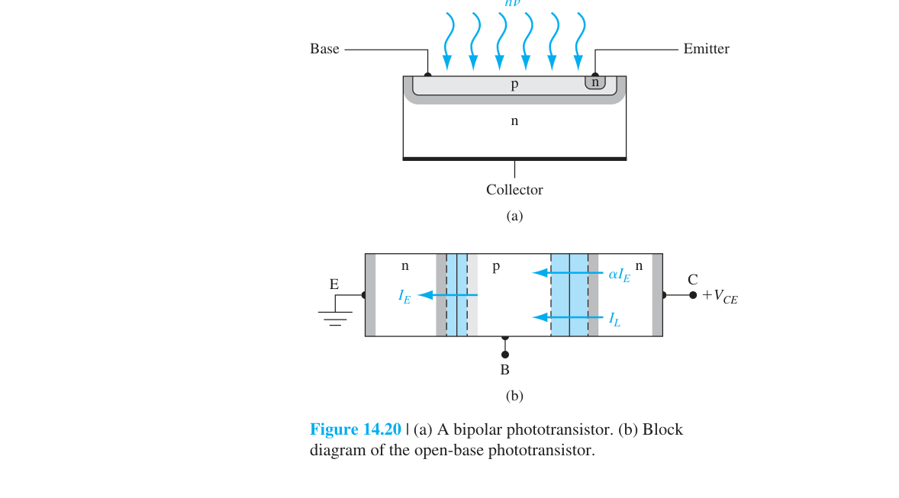
在 GaAs LED 中，發光主要來自 p 側——因為電子的注入效率（電子從 n 注入 p）高於電洞的注入效率（電洞從 p 注入 n），這是由於電子遷移率通常較高以及摻雜不對稱所致。
LED 的輸出光強度與注入電流（擴散電流）成正比。但有一個重要前提：電流必須以輻射復合為主。如果電流主要走非輻射路徑（SRH 復合、表面復合），則 LED 效率很低。
LED 在順向偏壓下注入電子與電洞，兩者在主動區復合時放出光子。
發光光譜不是無限窄，會受到載子能量分布、能帶結構與主動區設計影響。
例題：判斷光輸出與電流關係
在低到中等注入區，光輸出常隨電流增加而上升；在高電流下，溫升與非輻射機制可能使斜率變小，甚至造成效率下降。
14.5.2 內部量子效率
內部量子效率定義為二極體電流中產生光子的比例。它由兩個因子相乘：
其中：
- 注入效率 $\gamma$：有用電流（例如電子注入 p 區的擴散電流 $J_n$）佔總電流的比例：
$J_p$ 是電洞擴散電流（對發光貢獻較小），$J_R$ 是空乏區復合電流（非輻射）。要讓 $\gamma\to1$，需要：(1) 使用 n⁺p 結構使 $J_p\ll J_n$；(2) 足夠大的順向偏壓使 $J_R$ 在總電流中佔比變小。
- 輻射效率 $\beta$：在注入的少數載子中，以輻射方式復合的比例：
$\beta$ 取決於材料品質——非輻射陷阱密度 $N_t$ 越低，$\tau_{nr}$ 越長，$\beta$ 越接近 1。p 型摻雜濃度有一個最佳值：摻雜增加 → 輻射復合率增加（因為多數載子電洞更多），但注入效率 $\gamma$ 降低（因為 $J_p$ 相對增大）。
內部量子效率描述主動區內注入載子轉成光子的比例，常由輻射與非輻射復合率競爭決定。
例題：用復合率比較效率
若某 LED 的非輻射復合率因缺陷增加而上升，即使注入電流相同，內部產生的光子數也會下降。這通常表現在光輸出降低與溫升增加。
14.5.3 外部量子效率
即使內部量子效率接近 100%，真正能從半導體射出的光子比例（外部量子效率 $\eta_{\text{ext}}$）通常只有 1%–3%。三個主要損耗機制：
1. 內部再吸收（Reabsorption）：發射光子能量 $h\nu\ge E_g$ → 在半導體中傳播時可能被重新吸收（band-to-band absorption）。大部分光子實際上射向基板方向，直接被吸收。
2. Fresnel 反射損耗：在半導體-空氣界面，折射率差導致部分光子被反射回半導體。反射係數：
GaAs（$\bar{n}_2=3.8$）到空氣（$\bar{n}_1=1.0$）：$\Gamma = (2.8/4.8)^2 = 0.34$ → 34% 的光子被反射回去。
3. 臨界角損耗（Total Internal Reflection）：從 Snell 定律，臨界角 $\theta_c = \sin^{-1}(\bar{n}_1/\bar{n}_2)$。GaAs 到空氣：$\theta_c=\sin^{-1}(1/3.8)=15.3°$。只有入射角小於 15.3° 的光子才能射出半導體——其餘全部被全反射困在內部。逃逸錐（escape cone）的立體角僅佔半球的 ∼2%（對於 $\bar{n}\approx3.5$ 的材料）。
例題：為何要做表面粗化或封裝透鏡
半導體折射率高，許多光會因全反射被困在元件內。表面粗化、透明封裝與光學結構能改變出射角分布，提高逃逸機率。
14.5.4 LED 元件
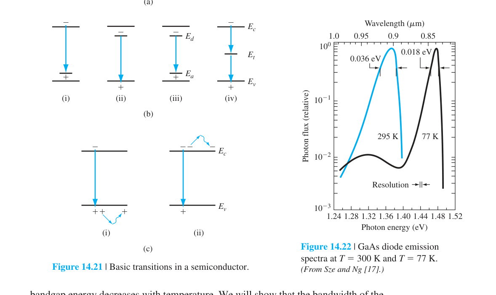
GaAsP 可見光 LED：通過調整 GaAs$_{1-x}$P$_x$ 的 $x$ 值來調控發光顏色。$x=0.4$（$E_g\approx1.9$ eV）→ 紅光。$x>0.45$ 後變間接能隙，須摻入氮（N）形成等電子陷阱（isoelectronic trap）來維持發光效率。這是早期紅色 LED 的主流技術。
異質結構 LED：使用寬能隙 N-AlGaAs / 窄能隙 p-GaAs 異質接面。電子從 N 層注入 p-GaAs 中復合發光，產生的光子能量 $h\nu<E_{g,\text{wide}}$ → 光可以穿過 N 層而不被吸收。寬能隙窗口大幅提高了外部效率。
雙異質結構（DH）LED：將活性層夾在兩個寬能隙層之間，同時限制載子和光子 → 載子復合和光產生都集中在活性層 → 高效率。這是現代高亮度 LED 的基本架構。
LED 元件結構常用雙異質接面或量子井，把電子、電洞與光場限制在主動區附近。
封裝與散熱同樣是元件設計的一部分，因為溫度會影響效率、波長與可靠度。
載子侷限提升內部復合效率，光學侷限與取出結構則決定產生的光能否有效離開晶片。
實際 LED 的亮度與可靠度也受接觸電阻、電流擴散與封裝材料老化影響。
因此元件結構小節要把材料、接面、光路與熱路放在同一張設計圖裡理解。
例題：雙異質結構的好處
若主動層被較大能隙材料包住，電子與電洞較不易溢出，同時折射率差也可能提供光學侷限。這會提高主動區復合與光輸出的有效性。
14.6 雷射二極體
LED 元件結構常用雙異質接面或量子井，把電子、電洞與光場限制在主動區附近。
良好的載子侷限可提高復合機率，良好的光學設計可提高取光效率。
封裝與散熱同樣是元件設計的一部分，因為溫度會影響效率、波長與可靠度。
例題：雙異質結構的好處
若主動層被較大能隙材料包住，電子與電洞較不易溢出，同時折射率差也可能提供光學侷限。這會提高主動區復合與光輸出的有效性。
雷射需居量反轉、光學共振腔與增益大於損耗三條件同時滿足。
14.6.1 受激放射與居量反轉
LED 輸出的是自發輻射（spontaneous emission）——每個電子-電洞對的復合都是獨立事件，產生的光子相位、方向、波長各異。雷射二極體（laser diode）輸出的是受激輻射（stimulated emission）——入射光子「誘導」電子復合，產生一個與入射光子完全相同（相位、方向、波長）的第二個光子。這需要三個條件同時滿足：(1) 居量反轉（population inversion）；(2) 光學共振腔（optical cavity）提供正回饋；(3) 增益大於損耗。
14.6.2 受激輻射與居量反轉
考慮兩個能階 $E_1$（低能）和 $E_2$（高能），電子佔據數分別為 $N_1$ 和 $N_2$。三個基本過程：
- 感應吸收（induced absorption）：光子被吸收，電子從 $E_1$ 躍遷到 $E_2$。速率 $\propto N_1$。
- 自發輻射（spontaneous emission）：電子自發從 $E_2$ 落到 $E_1$，釋放光子。速率 $\propto N_2$。
- 受激輻射（stimulated emission）：入射光子誘導電子從 $E_2$ 落到 $E_1$，釋放一個全同光子。速率 $\propto N_2$。
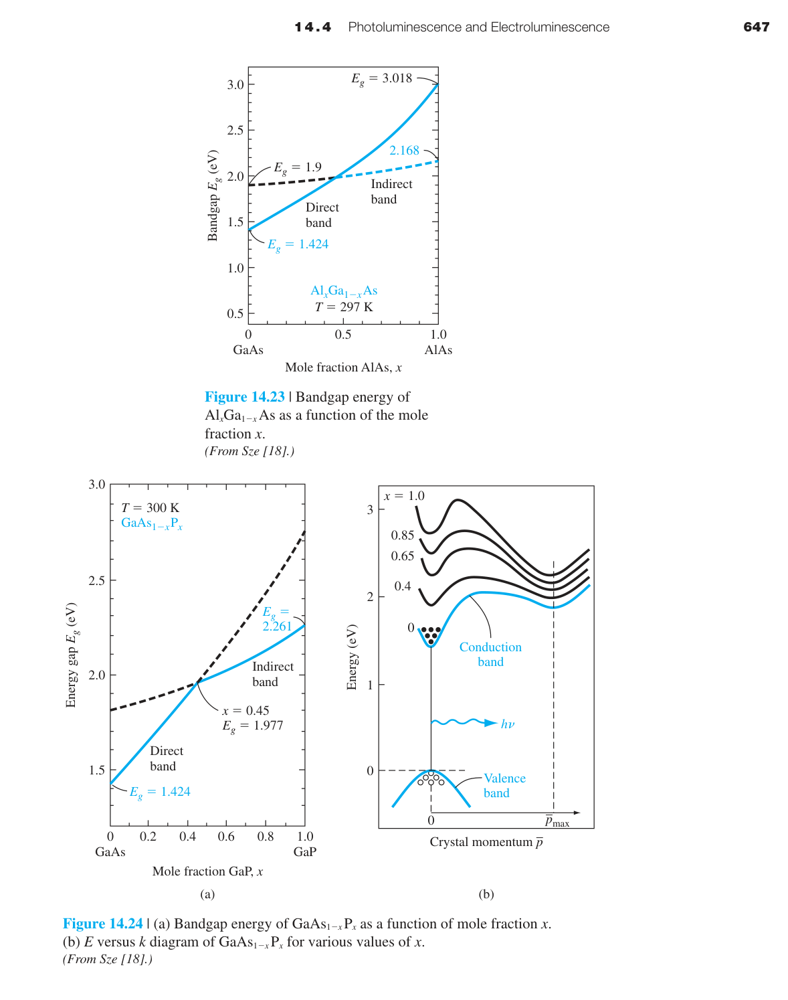
在熱平衡下，$N_2 < N_1$（Boltzmann 分布）→ 吸收主導。要實現光放大（lasing），必須 $N_2 > N_1$——這就是居量反轉（population inversion），一個非熱平衡條件。
在半導體中，居量反轉對應於：導帶中有大量電子且價帶中有大量電洞（即空態）。這只有當 pn 接面兩側都簡併摻雜（degenerately doped，$E_F$ 進入能帶）並施加足夠大的順向偏壓時才能實現。增益條件：
即光子能量必須大於能隙（才能產生受激輻射），但小於準 Fermi 能階差（確保居量反轉）。增益因子 $\gamma(\nu)\propto(N_2-N_1)$。
例題：判斷是否達到光學增益
若注入使導帶與價帶的準費米能階分離足夠大，受激放射可超過吸收而形成增益。若增益仍小於腔內總損失，就還不會達到雷射閾值。
14.6.2 光學共振腔
居量反轉提供增益，但要產生相干、窄頻的雷射輸出，還需要光學共振腔來提供正回饋和頻率選擇。最簡單的共振腔是Fabry-Perot 腔——兩面平行的部分反射鏡。
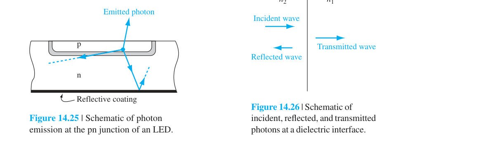
在半導體雷射中，鏡面可以通過沿 (110) 面劈裂（cleaving）晶體自然形成——半導體-空氣界面的折射率差（GaAs：$\bar{n}\approx3.6$ → $\Gamma\approx0.32$）提供了約 32% 的反射率。腔長 $L$ 通常為數百 μm。
共振條件——腔長必須是半波長的整數倍：
由於 $L\gg\lambda$，腔內可以容納許多模式（縱模），模式間距 $\Delta\lambda\approx\lambda^2/(2\bar{n}L)$。典型值：GaAs 雷射，$L=300$ μm，$\lambda=850$ nm → $\Delta\lambda\approx0.3$ nm。
光學共振腔提供回授，使特定方向與特定頻率的光在腔內反覆放大。
Fabry–Pérot 腔由兩個反射端面形成，腔長決定允許的縱模間距。
例題：由腔長判斷模式間距
腔長越長，縱模間距越小；腔長越短，模式間距越大。因此單模設計常需要額外的光柵、分佈回授或腔體工程。
14.6.3 閾值電流
雷射開始振盪的條件是：光在腔內往返一周的增益等於損耗。主要損耗來自：材料吸收（$\alpha$）和鏡面透射（部分光輸出）。閾值條件：
其中 $\Gamma_1,\Gamma_2$ 是兩面鏡的反射率。解出閾值增益：
增益 $\gamma$ 與注入電流密度 $J$ 的關係可近似為 $\gamma=\beta J$（$\beta$ 為增益因子，由實驗或理論決定）。因此閾值電流密度：
典型 GaAs 同質接面雷射的 $J_{th}\approx10^3$–$10^4$ A/cm²（室溫），這意味著需要相當大的電流才能達到雷射閾值——通常只能以脈衝模式操作以避免過熱。
雷射閾值發生在材料增益乘上光學侷限後，剛好補償鏡面損失與內部損失的時候。
例題：判斷閾值電流變大的原因
若溫度升高、缺陷增加或鏡面損失變大，達到相同淨增益所需的注入電流會提高。量測上可看到 L–I 曲線的閾值往高電流移動。
14.6.4 元件結構與特性
同質接面雷射的問題：載子和光子都沒有被有效限制 → 閾值電流密度過高。
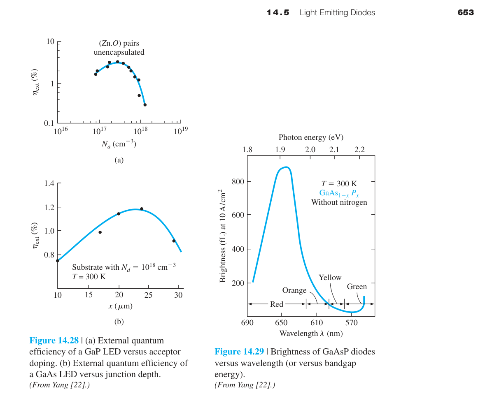
雙異質結構（double heterostructure, DH）雷射解決了這個問題：
- 載子限制：活性層（窄能隙 GaAs）夾在兩層寬能隙 AlGaAs 之間。注入的電子被導帶的能帶不連續（$\Delta E_c$）阻擋在活性層中 → 載子濃度更高 → 增益更大。
- 光學限制：GaAs 的折射率（∼3.6）大於 AlGaAs（∼3.2–3.4）→ 活性層形成介質波導 → 光子被限制在活性層中 → 光模體積更小 → 光學增益更高。
DH 雷射的閾值電流密度可降至 ∼$10^3$ A/cm²（室溫連續波操作），比同質接面雷射低 1–2 個數量級。這使得室溫 CW 操作的半導體雷射成為可能——是光纖通訊、CD/DVD/Blu-ray、雷射列印等應用的基礎。
量子井雷射（Quantum Well Laser）：將活性層厚度縮小到 ∼10 nm（與 de Broglie 波長可比）→ 量子限制效應使能階分立 → 態密度從 3D 拋物線變為 2D 階梯函數 → 增益更高、閾值電流更低（∼$10^2$ A/cm²）。這是現代半導體雷射的標準技術。
元件特性還包含斜率效率、光譜模式、溫度漂移與可靠度，這些量決定雷射能否進入實際系統。
例題：判斷雙異質雷射為何降低閾值
若窄能隙主動層被寬能隙材料夾住，載子較集中；若折射率同時形成波導，光場也集中。兩者讓同樣電流產生更高有效增益，因此閾值電流降低。
🧪 互動模型：光子能量、波長與能隙門檻
展開互動模型收合互動模型調整波長，即時判斷光子是否足以跨越各材料的能隙
14.7 本章總結
第十四章將前面十三章的所有核心物理概念——能隙、能帶、非平衡載子、復合、擴散、pn 接面、異質接面——整合為一個統一的框架，說明了半導體如何與光交互作用，以及這些交互作用如何轉化為實用的光電元件。
核心物理概念回顧
- 光吸收由 $\alpha$ 描述，$I_\nu(x)=I_{\nu0}e^{-\alpha x}$。$\alpha$ 是 $h\nu$ 和 $E_g$ 的強函數，直接能隙材料的 $\alpha$ 陡峭且大，間接能隙材料則緩慢且小。
- EHP 產生率 $g=\alpha I_\nu/h\nu$，連結光子通量和載子動力學。穩態 $\delta n=g\tau$（第六章）。
- 太陽能電池 I-V 特性：$I=I_L-I_S(e^{eV/kT}-1)$，直接建立在第八章的理想二極體方程上。$I_{sc}=I_L$，$V_{oc}=V_t\ln(1+I_L/I_S)$，$\eta=P_m/P_{in}$。
- 光偵測器的核心指標是增益和速度。光導體增益 $\Gamma_{\text{ph}}=\tau_p/t_n$（可遠大於 1 但速度慢）；光二極體增益=1 但速度快；PIN 和 APD 提供了不同的增益-速度取捨組合。
- 發光效率 $\eta_q=R_r/(R_r+R_{nr})$。直接能隙材料的 $R_r$ 比間接能隙大 $10^6$ 倍——這是 LED 和雷射必須用 GaAs、GaN 等材料的根本原因。
- LED 的外部效率受 Fresnel 反射和臨界角全反射限制，$\eta_{\text{ext}}$ 通常僅 1%–3%。異質結構和表面工程可大幅改善。
- 雷射二極體需要三個條件：(a) 居量反轉（簡併摻雜 + 大順向偏壓）；(b) 光學共振腔（Fabry-Perot，增益 > 損耗）；(c) 雙異質結構以限制載子和光子。$J_{th}\propto\alpha+(1/2L)\ln(1/\Gamma_1\Gamma_2)$。
材料選擇的核心教訓
| 應用 | 最佳材料 | 關鍵原因 |
|---|---|---|
| 太陽能電池 | Si（單晶/多晶）、GaAs | Si：成本；GaAs：高效率（直接能隙+可調能隙） |
| 紅外 LED / 雷射 | GaAs、InGaAsP | 直接能隙，能隙匹配紅外波長 |
| 可見光 LED | GaN、InGaN、GaAsP | 寬直接能隙（藍/綠光：GaN ∼3.4 eV） |
| 高速光偵測器 | InGaAs、Ge | 在 1.3–1.55 μm（光纖最低損耗窗口）高吸收 |
—— 第十四章完 · 全書終 ——
常見誤解
自我檢核
為什麼 Si 適合做電子元件，卻不是高效率發光材料？
Si 是間接能隙材料，輻射復合需要聲子協助，機率遠低於直接能隙材料；因此在電晶體與積體電路中很強，但不適合做高效率 LED 或雷射。
太陽能電池的短路電流受哪些因素限制？
主要受入射光譜、吸收係數、反射損失、生成深度、擴散長度、表面復合與空乏區收集效率共同限制。
PIN 光二極體與 APD 的核心取捨是什麼？
PIN 偏向高速、低雜訊與低偏壓；APD 透過雪崩倍增提高弱光靈敏度，但需要高偏壓並引入倍增雜訊。
延伸資源
建議把本章與第 6 章非平衡載子、第 7 章 pn 接面、第 9 章異質接面一起複習，因為光電元件其實是在同一套載子產生、復合、漂移與擴散框架下運作。
若要做題目，優先練習三類：由波長判斷能否吸收、由響應度或生成率估算光電流、由增益–損失平衡判斷雷射閾值。
本章學習資源
推導、假設與章末診斷
光電方程的完整假設與邊界
- Beer–Lambert 定律假設單色平面光、均勻材料、$\alpha$ 不隨位置變化，並忽略干涉、多重反射與散射。
- $G(x)=\alpha\Phi_0e^{-\alpha x}$ 假設每個被吸收光子產生一對可用電子–電洞；量子效率不足時乘 $\eta$。
- 理想太陽電池採疊加原理、單一接面、均勻溫度、無串聯／並聯漏電損失。
- 雷射閾值邊界是一個 round trip 的模態增益恰好抵銷內部與鏡面損失。
中間推導：吸收、光電流與響應度
- $d\Phi/dx=-\alpha\Phi$，邊界 $\Phi(0)=\Phi_0$，故 $\Phi(x)=\Phi_0e^{-\alpha x}$。
- 每單位體積生成率 $G=-d\Phi/dx=\alpha\Phi$。
- 厚度 $d$ 內被收集的光子率為 $\Phi_0(1-e^{-\alpha d})$，乘 $qA\eta_c$ 得光電流。
- 若以入射功率表示，$\mathcal R=\eta q/(h\nu)=\eta q\lambda/(hc)$。
章末練習與概念診斷
為何 Si 適合吸光卻不擅長發光？
Si 是間接能隙，輻射復合還需聲子協助；非輻射途徑競爭強，因此發光效率低。
Laser 為何不是「電流更大的 LED」？
它還需 population inversion、受激放射與腔體回授，且模態增益必須超過總損失的閾值。
延伸計算練習
完成上方診斷後，請在不查公式的情況下重建代表推導，並改變一個參數檢查極限行為。更多含數值與解答的題目：本章完整習題頁。